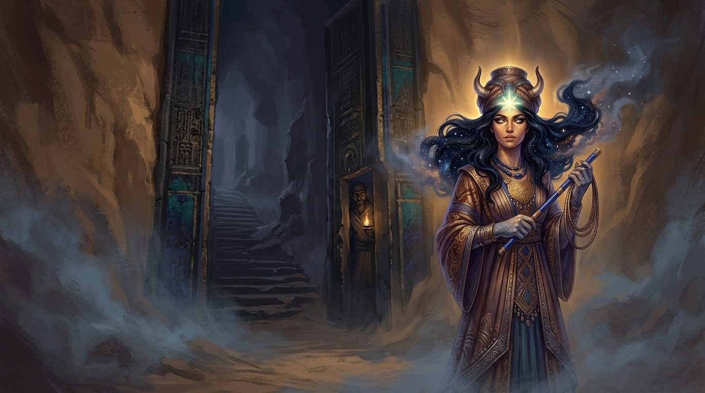
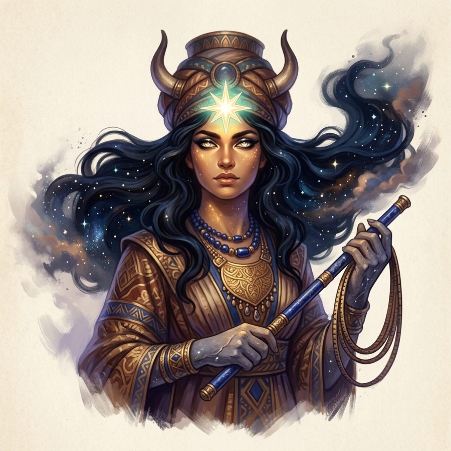
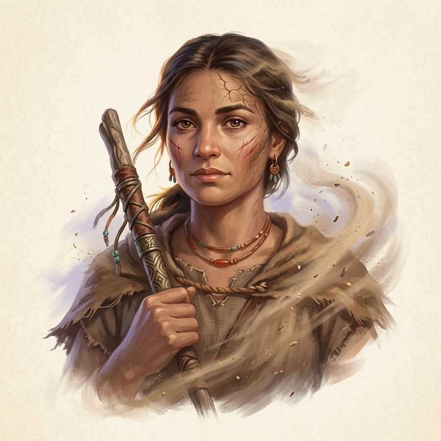
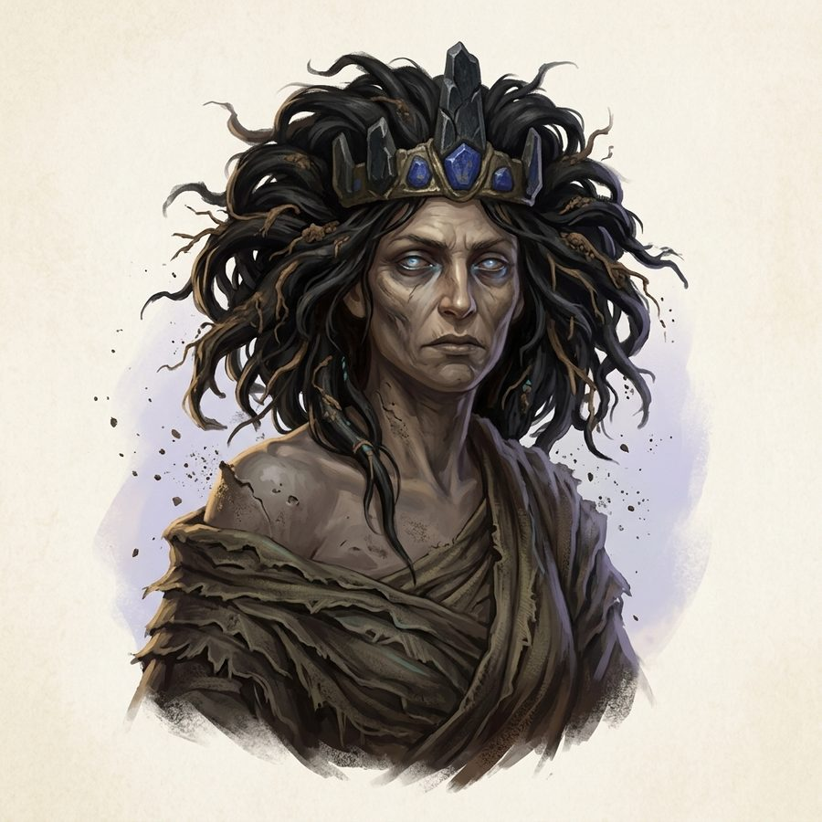
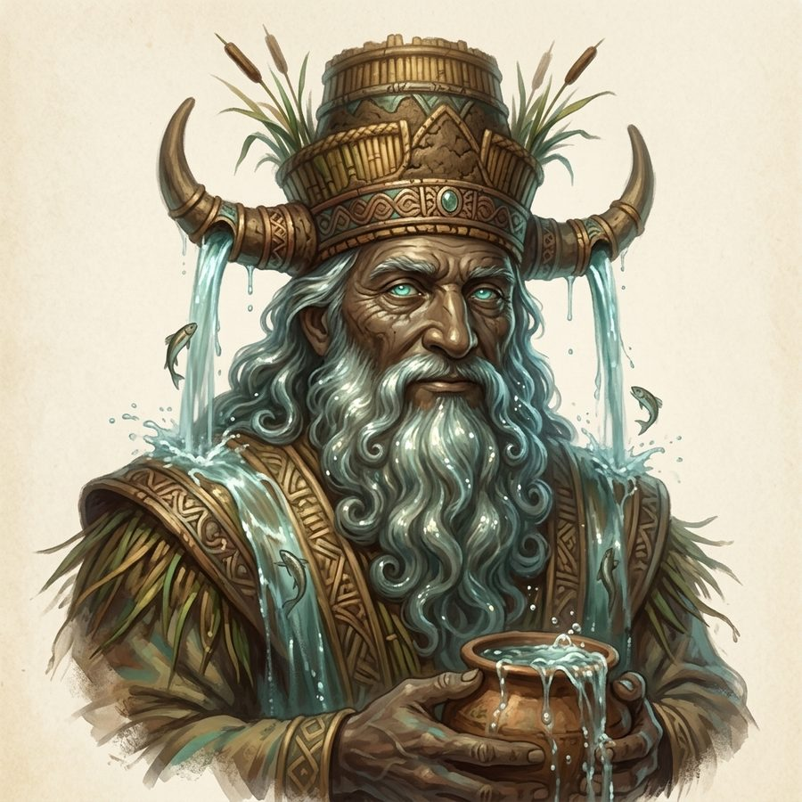
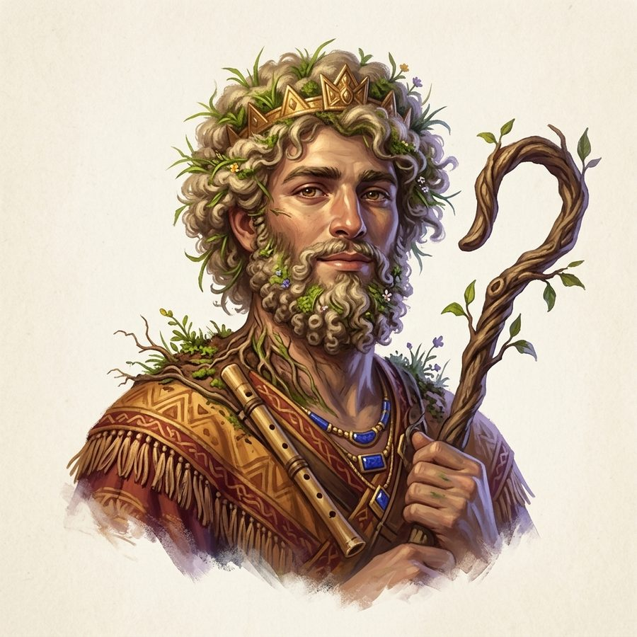

Sumerisch · · 21 min lezen
De afdaling van Inanna
Zeven poorten naar het land zonder terugkeer

Er was een tijd dat de goden nog in de steden van de mensen woonden. Elke stad in het land tussen de twee rivieren had haar eigen god, en elke god had een huis van leemsteen, met een binnenhof, een trap naar het dak en een beeld dat elke ochtend gewassen en gekleed werd. De mensen brachten er brood, bier, dadels en olie. Ze zongen er hymnen en ze vroegen er om regen, om vruchtbare akkers en om kinderen.
De machtigste van al die goden, of in elk geval de meest gevreesde en de meest geliefde, was Inanna.

Ze was de godin van de liefde en van de oorlog, en dat was voor de Sumeriërs geen tegenstelling. Allebei maken ze een mens onrustig. Allebei kunnen ze een stad redden of verwoesten. Inanna was de avondster en de morgenster, het licht dat als laatste ondergaat en als eerste weer opkomt. Ze was jong, eigenwijs, hartstochtelijk en nooit tevreden. Haar eigen huis stond in Uruk, de grootste stad van het land, en heette het Eanna, het Huis van de Hemel. Maar ze had huizen in veel meer steden: in Bad-tibira en in Zabalam, in Adab en in Nippur, in Kish en in Akkad.
Op een dag richtte ze haar gedachten op de onderwereld.
Het afscheid van de steden
Het verhaal zegt het in drie zinnen, die op elkaar lijken als drie stappen op een trap. Van de grote hemel richtte zij haar gedachten op de grote beneden. De godin richtte haar gedachten van de grote hemel naar de grote beneden. Inanna richtte haar gedachten van de grote hemel naar de grote beneden.
Waarom ze dat deed, zegt het verhaal niet. Misschien wist ze het zelf niet precies. Inanna had de hemel en ze had de aarde. Er was nog één rijk dat niet van haar was.
Ze verliet haar ambt in Uruk, haar priesters, haar tempelzangers en de dagelijkse offers. Ze verliet het Eanna. Ze verliet haar huis in Bad-tibira en haar huis in Zabalam. Ze verliet haar huis in Adab, haar huis in Nippur, haar huis in Kish en haar huis in Akkad. Een voor een gingen de deuren dicht. In de tempels stonden de lampen te branden voor een godin die er niet meer was.
Toen kleedde ze zich aan.
Ze nam de zeven goddelijke krachten in haar hand. De Sumeriërs noemden ze me: de krachten die de wereld laten werken, het koningschap en de wijsheid, het ambacht en de muziek. Ze had ze ooit zelf losgekregen van de oude god Enki, op een avond dat hij te veel bier had gedronken. Nu nam ze ze mee, en ze trok aan wat bij haar macht hoorde.
Op haar hoofd zette ze de shugurra, de tulband die een koningin draagt als ze de vlakte opgaat. Over haar voorhoofd legde ze haar haar, glanzend en in model. Om haar hals deed ze een snoer van kleine kralen van lapis lazuli, het blauwe steen uit de bergen ver in het oosten, zo blauw als de nachtlucht. Op haar borst hing ze een dubbel snoer van grote eivormige kralen. Ze trok het pala-kleed aan, het kleed van een vorstin, dat in plooien tot op de grond viel. Ze maakte haar ogen op met een zwarte zalf die 'Laat hij komen, laat hij komen' heette. Op haar borst bevestigde ze een borststuk van goud dat 'Kom, man, kom' heette. Om haar vinger schoof ze een gouden ring. En in haar hand nam ze de meetstok en het meetsnoer van lapis lazuli, waarmee een koning de grond van een nieuwe tempel afmeet.
Zo ging Inanna op weg naar de onderwereld. Maar voordat ze vertrok, riep ze haar dienares.
De opdracht aan Ninshubur

Ninshubur was haar minister, haar bode en haar raadsvrouw. Ze had Inanna al gediend zo lang als iemand zich kon herinneren. In de hymnen wordt ze 'de trouwe minister van het Eanna' genoemd, en ook 'zij die goede woorden spreekt'. Waar Inanna stormachtig was, was Ninshubur rustig. Waar Inanna haast had, dacht Ninshubur na.
'Mijn trouwe minister,' zei Inanna. 'Mijn bode met goede woorden, mijn bode met betrouwbare woorden. Ik ga nu naar de onderwereld. Als ik daar ben aangekomen, moet je dit doen.'
Ninshubur luisterde.
'Laat voor mij een klaagzang klinken bij de puinhopen. Sla de trom voor mij in de heiligdommen. Ga rond langs de huizen van de goden. Krab je ogen open, krab je neus open, en krab je dijen open, op de plek die je voor anderen verborgen houdt. Trek één enkel kleed aan, zoals een arme. En ga dan helemaal alleen naar het Ekur, het huis van Enlil in Nippur.'
Enlil was de koning van de goden, de heer van de lucht en de wind, die over de lotsbestemmingen ging.
'Als je bij Enlil binnenkomt,' zei Inanna, 'moet je voor hem huilen. Zeg tegen hem: vader Enlil, laat niemand uw dochter daar beneden doden. Laat uw kostbare zilver niet bedekt raken met het stof van de onderwereld. Laat uw kostbare lapis lazuli niet gekloofd worden door de steen van de steenhouwer. Laat uw buxushout niet gehakt worden door het hout van de timmerman. Laat de jonge vrouw Inanna niet daar beneden gedood worden.'
Ze haalde adem.
'Als Enlil je in deze zaak niet helpt, ga dan naar Ur, naar het huis van Nanna, de god van de maan, en huil daar op dezelfde manier en zeg hetzelfde. En als Nanna je niet helpt, ga dan naar Eridu, naar het huis van Enki. Enki, de heer van de grote wijsheid, kent het kruid van het leven en het water van het leven. Hij zal mij weer tot leven brengen.'
'Ga nu, Ninshubur,' zei ze. 'En vergeet niet wat ik je gezegd heb.'
Ninshubur boog. Inanna draaide zich om en liep naar de rand van de wereld.
De poort van Ganzer
De onderwereld lag niet in de hemel en niet op de aarde, maar eronder. De Sumeriërs noemden haar kur, wat ook 'berg' en 'vreemd land' betekent, en ook kurnugia: het land zonder terugkeer. Wie er was, kwam er niet meer uit. Daar woonden de doden in het halfduister. Ze aten stof en klei, en ze droegen kleren van veren, zoals vogels. Het paleis van de onderwereld heette Ganzer, en het had zeven poorten, de een achter de ander, steeds dieper.
Inanna kwam bij de eerste poort aan. Ze bonsde op de deur.
'Open het huis, poortwachter!' riep ze. 'Open het huis, Neti! Ik ben alleen, en ik wil naar binnen.'
Achter de deur schoof iets. Door een spleet keek de opperste poortwachter van de onderwereld naar buiten, naar de jonge vrouw in haar koninklijke kleed, met goud op haar borst en lapis om haar hals, die licht gaf in het donker als een ster.
'Wie ben jij?' vroeg Neti.
'Ik ben Inanna, op weg naar het oosten.'
'Als je werkelijk Inanna bent, op weg naar het oosten,' zei Neti langzaam, 'waarom ben je dan op weg naar het land zonder terugkeer? Hoe kan je hart je naar de weg leiden waarvan niemand terugkomt?'
Inanna had een antwoord klaar. 'Omdat de heer Gugalanna, de echtgenoot van mijn oudere zus, de koningin Ereshkigal, gestorven is,' zei ze. 'Ik kom om bij zijn begrafenis de plengoffers mee te maken. Zo moet het gebeuren.'
Neti keek haar nog een tijd aan.
'Blijf hier staan, Inanna,' zei hij. 'Ik ga met mijn meesteres spreken.'
De koningin van beneden

Diep in Ganzer zat Ereshkigal op haar troon. Haar naam betekent 'Vrouwe van de Grote Aarde', en de grote aarde, dat was het rijk beneden. Ze was de oudere zus van Inanna. Waar Inanna alles had, het licht, de liefde, de tempels, de hymnen en de feesten, had Ereshkigal het stof en de stilte, en de doden die kwamen en nooit meer weggingen. Ze kreeg geen tempels in de steden van de mensen. Ze kreeg alleen de plengoffers die de levenden op de graven goten, wat water en wat bier, door een pijp de grond in.
Neti kwam binnen en boog.
'Mijn vrouwe,' zei hij, 'er staat een meisje alleen voor de poort. Het is Inanna, uw zus.'
En hij vertelde precies wat hij gezien had. Dat zij de zeven krachten in haar hand hield. De tulband op haar hoofd. De kralen van lapis om haar hals. Het dubbele snoer op haar borst. Het pala-kleed om haar lichaam. De zwarte zalf om haar ogen. Het gouden borststuk dat 'Kom, man, kom' heette. De gouden ring om haar vinger. De meetstok en het meetsnoer in haar hand.
Ereshkigal luisterde. Toen sloeg ze met haar hand op haar dij. Ze beet op haar lip. Ze nam de woorden ter harte, zegt het verhaal, en ze zat een tijd zonder iets te zeggen.
Haar jongere zus. De koningin van de hemel, met al haar sieraden, in haar mooiste kleed. Die kwam niet om te rouwen.
'Kom, Neti,' zei Ereshkigal ten slotte. 'Mijn opperste poortwachter van de onderwereld. Let goed op wat ik je zeg. Sluit de zeven poorten van de onderwereld af. Open daarna de deuren van het paleis Ganzer, één voor één. En als ze binnenkomt, als ze gebukt is en als ze ontkleed is, laat ze dan alles achter.'
Neti ging terug. Hij schoof de grendels op de zeven poorten. Toen opende hij de eerste deur.
'Kom, Inanna,' zei hij. 'Kom binnen.'
De zeven poorten
Inanna stapte over de drempel. Het was kouder aan de andere kant van de poort, en stiller. De lucht was droog en rook naar stof.
Bij de eerste poort stak Neti zijn hand uit en nam de tulband van haar hoofd.
'Wat is dit?' vroeg Inanna.
'Wees stil, Inanna,' zei Neti. 'Een goddelijke kracht van de onderwereld is vervuld. Inanna, je mag de gebruiken van de onderwereld niet bekritiseren.'
Ze liep verder, de trap af. De tweede poort ging voor haar open. Neti nam de kleine kralen van lapis lazuli van haar hals.
'Wat is dit?'
'Wees stil, Inanna. Een goddelijke kracht van de onderwereld is vervuld. Inanna, je mag de gebruiken van de onderwereld niet bekritiseren.'
Bij de derde poort nam hij het dubbele snoer van grote kralen van haar borst. Ze vroeg wat dit was, en hij gaf hetzelfde antwoord, met dezelfde woorden, als een gebed dat al duizend keer gezegd was.
Bij de vierde poort nam hij het gouden borststuk weg, 'Kom, man, kom'. Wat is dit? Wees stil, Inanna.
Bij de vijfde poort trok hij de gouden ring van haar vinger.
Bij de zesde poort nam hij de meetstok en het meetsnoer van lapis uit haar hand. Ze had niets meer om de wereld mee af te meten.
Het werd donkerder bij elke poort. Het licht dat Inanna altijd om zich heen had gehad, het licht van de ster, werd kleiner bij elk ding dat ze afgaf. Bij de zevende poort nam Neti het pala-kleed van haar lichaam, het kleed van de vorstin. Ze vroeg nog één keer wat dit was.
'Wees stil, Inanna,' zei Neti. 'Een goddelijke kracht van de onderwereld is vervuld. Inanna, je mag de gebruiken van de onderwereld niet bekritiseren.'
Zo kwam ze binnen in de troonzaal van het land zonder terugkeer: gebukt, zonder kroon, zonder sieraden, zonder kleren. Zoals iedereen er binnenkomt.
Het oordeel
De troonzaal was hoog en schemerig. Langs de wanden zaten de doden, stil als mensen die al heel lang wachten. Op de troon zat Ereshkigal. Rondom haar zaten de Anunna, de zeven rechters van de onderwereld.
Toen deed Inanna iets wat niemand verwachtte, en wat het verhaal in één zin vertelt, zonder uitleg. Ze liep naar de troon, ze duwde haar zus eraf, en ze ging er zelf op zitten.
Misschien was ze daarvoor gekomen. Misschien wilde ze dit rijk ook hebben, het laatste dat nog niet van haar was.
De zeven rechters stonden op. Ze oordeelden over haar. Ze keken naar haar met de blik van de dood. Ze spraken tegen haar met het woord van de woede. Ze riepen tegen haar met de schreeuw van de zware schuld.
En de vrouw die op de troon zat, werd een lijk.
Ze hingen het lichaam van Inanna aan een haak aan de muur. Daar hing het, in het halfduister, als een stuk vlees dat aan het bederven is. Er was geen licht meer van de ster. Er was niets meer van de koningin van de hemel.
Boven, in de steden, gingen de dagen voorbij. In het Eanna brandden nog de lampen. Maar de avondster kwam niet op.
Ninshubur gaat op weg
Drie dagen en drie nachten wachtte Ninshubur, zoals haar gezegd was. Toen Inanna niet terugkwam, wist ze wat haar te doen stond.
Ze liet de klaagzang klinken bij de puinhopen buiten de stad, waar de oude muren lagen van huizen die niemand zich meer herinnerde. Ze sloeg de trom in de heiligdommen. Ze ging rond langs de huizen van de goden. Ze krabde haar ogen open en haar neus en haar dijen. Ze trok één enkel kleed aan, zoals een arme. En helemaal alleen ging ze op weg naar Nippur.
Het was een lange weg langs het kanaal, tussen de akkers en de dadelpalmen. Ze sliep langs de kant van de weg. Ze at wat de mensen haar gaven. Toen zag ze in de verte het Ekur liggen, de berg van een tempel waarin Enlil woonde, en ze ging naar binnen.
Ze viel neer voor de koning van de goden en huilde. 'Vader Enlil,' zei ze, 'laat niemand uw dochter daar beneden doden. Laat uw kostbare zilver niet bedekt raken met het stof van de onderwereld. Laat uw kostbare lapis lazuli niet gekloofd worden door de steen van de steenhouwer. Laat uw buxushout niet gehakt worden door het hout van de timmerman. Laat de jonge vrouw Inanna niet daar beneden gedood worden.'
Enlil werd boos.
'Mijn dochter verlangde naar de grote hemel,' zei hij, 'en ze verlangde ook naar de grote beneden. Wie de goddelijke krachten van de onderwereld krijgt, moet in de onderwereld blijven. Wie gaat naar zo'n plek en verwacht dan terug te komen?'
Hij hielp haar niet.
Ninshubur stond op en ging verder. Ze liep naar het zuiden, langs de rivier, naar Ur, de stad van de maan. Daar woonde Nanna in zijn huis, de god die elke nacht met zijn boot van licht door de lucht vaart. Inanna noemde hem vader, want hij was het die haar het leven had gegeven.
Ninshubur viel ook voor hem neer en huilde en zei dezelfde woorden. Van het zilver, de lapis en het buxushout. Laat de jonge vrouw Inanna niet daar beneden gedood worden.
En Nanna werd net zo boos als Enlil, en zei hetzelfde. 'Mijn dochter verlangde naar de grote hemel, en ze verlangde ook naar de grote beneden. Wie gaat naar zo'n plek en verwacht dan terug te komen?'
Ook hij hielp haar niet.
Ninshubur stond weer op. Ze had nog één plek om heen te gaan.
Het vuil onder de nagels

Eridu lag in het uiterste zuiden, waar het land overgaat in moeras en riet en lagunes, en waar de zee begint. Het was de oudste stad van allemaal. Daar woonde Enki in zijn huis aan het water. Hij was de god van het zoete water onder de aarde, de diepe bron die de Sumeriërs de Abzu noemden, waar alle rivieren en putten hun water vandaan halen. Hij was ook de god van de wijsheid, van de toverspreuken en van de ambachten. Hij was de slimste van de goden, en de enige die ooit de mensen had geholpen als de andere goden ze wilden vernietigen.
Ninshubur viel voor hem neer en huilde en zei de woorden voor de derde keer.
Enki luisterde. Toen zei hij iets anders dan de anderen.
'Wat heeft mijn dochter gedaan? Ik maak me zorgen. Wat heeft Inanna gedaan? Ik maak me zorgen. De koningin van alle landen, wat heeft ze gedaan? Ik maak me zorgen.'
Hij bekeek zijn handen. Onder de nagel van een van zijn vingers zat wat vuil, zoals bij iedereen die zijn handen gebruikt. Hij haalde het eruit, en uit dat vuil maakte hij een wezentje. Het heette de kurgarra. Onder de nagel van een andere vinger zat ook vuil, en daaruit maakte hij een tweede wezentje, de galatur. Het waren geen mannen en geen vrouwen, geen goden en geen mensen. Het waren de kleinste, onopvallendste schepsels die je kunt bedenken.
Aan de kurgarra gaf hij het kruid van het leven. Aan de galatur gaf hij het water van het leven. En toen vertelde hij hun wat ze moesten doen.
'Ga naar de onderwereld,' zei Enki. 'Glip langs de deur als vliegen. Glip langs de scharnieren als schimmen. De moeder die bevalt, Ereshkigal, ligt daar vanwege haar kinderen. Haar heilige schouders zijn niet bedekt met linnen. Haar borst is niet vol zoals een kruik. Haar nagels zijn als een houweel. Het haar op haar hoofd zit in een bos, zoals prei.'
Want daar beneden, nu haar zus aan de haak hing, lag Ereshkigal te kreunen, als een vrouw in barensnood, als een moeder die in rouw is. Ze was alleen. In het hele land zonder terugkeer was er niemand die naar haar luisterde.
'Als zij zegt: o, mijn hart,' zei Enki, 'zeg dan tegen haar: u bent bedroefd, onze vrouwe, o, uw hart. Als zij zegt: o, mijn lever, zeg dan tegen haar: u bent bedroefd, onze vrouwe, o, uw lever.'
'Dan zal ze vragen wie jullie zijn,' ging hij verder. 'Dan zal ze jullie een geschenk willen geven. Ze zal jullie een rivier vol water aanbieden. Neem die niet aan. Ze zal jullie een akker vol graan aanbieden. Neem die niet aan. Zeg dan tegen haar: geef ons het lijk dat aan de haak hangt. Strooi het kruid van het leven erover en sprenkel het water van het leven erover. Dan zal Inanna opstaan.'
Een stem in het donker
De kurgarra en de galatur gingen op weg. Ze waren zo klein dat niemand ze zag. Ze glipten langs de zeven poorten als vliegen, langs de scharnieren als schimmen. Neti merkte niets.
In de troonzaal lag Ereshkigal. Het was zoals Enki gezegd had. Haar schouders waren bloot, haar haar zat in een wilde bos, en ze kreunde.
'O,' zei ze. 'Mijn hart.'
'U bent bedroefd, onze vrouwe,' zeiden de twee kleine wezens. 'O, uw hart.'
Ereshkigal hield op met kreunen. Ze keek op.
'O,' zei ze. 'Mijn lever.'
'U bent bedroefd, onze vrouwe. O, uw lever.'
Wie weet hoe lang het geleden was dat iemand tegen haar had gezegd dat ze bedroefd was. De doden zeggen niets. De rechters oordelen alleen. Nu stonden daar twee schepseltjes, van niets gemaakt, en ze voelden met haar mee.
'Wie zijn jullie?' vroeg Ereshkigal. 'Jullie die mij beklagen. Als jullie goden zijn, zal ik jullie zegenen. Als jullie mensen zijn, zal ik jullie een lot schenken. Zweer het bij de hemel en bij de aarde.'
Ze bood hun een rivier aan, vol water. Ze namen hem niet aan. Ze bood hun een akker aan, vol graan. Ze namen hem niet aan.
'Geef ons het lijk dat aan de haak hangt,' zeiden ze.
'Dat lijk,' zei Ereshkigal, 'is van jullie koningin.'
'Of het nu van onze koning is of van onze koningin,' zeiden ze, 'geef het ons.'
En ze gaf het hun.
De kurgarra strooide het kruid van het leven over het lichaam. De galatur sprenkelde het water van het leven erover. En Inanna stond op.
Wie in haar plaats gaat
Ze stond op, en ze wilde weg. Maar de Anunna, de zeven rechters, grepen haar vast.
'Wie is er ooit uit de onderwereld opgestegen,' zeiden ze, 'zonder er iets voor te betalen? Als Inanna de onderwereld wil verlaten, moet ze iemand in haar plaats geven.'
Dat was de wet van beneden. Het land zonder terugkeer laat niemand gaan zonder iemand terug te krijgen.
Dus steeg Inanna op uit de onderwereld, de zeven poorten door, maar ze ging niet alleen. Vóór haar liep iemand met een scepter in zijn hand, al was hij geen minister. Achter haar liep iemand met een strijdknots aan zijn heup, al was hij geen lijfwacht. Om haar heen liepen de galla, de demonen van de onderwereld, kleine en grote, als een rietomheining om haar heen.
Ze waren geen gewone demonen. Ze aten geen eten en ze dronken geen water. Ze namen geen offers aan en geen plengoffers. Ze kenden geen vrouw om te omhelzen en geen kind om te kussen. Ze namen de vrouw uit de armen van haar man en het kind van de schoot van zijn vader. Ze haalden de bruid weg uit het huis van haar schoonvader. Ze waren gekomen om iemand mee te nemen, en ze gingen niet terug zonder.
Ninshubur, Shara en Lulal
Bij de poort van Ganzer, waar het pad weer omhoog naar de wereld liep, zat Ninshubur.
Ze zat in het stof, in haar ene armoedige kleed, met haar gezicht vol krassen. Ze was teruggekomen naar de plek waar ze Inanna voor het laatst gezien had, en ze had daar gewacht. Toen ze haar meesteres zag, wierp ze zich voor haar voeten.
'Ga maar verder, Inanna,' zeiden de demonen. 'Deze nemen we mee.'
'Nee,' zei Inanna. 'Zij is mijn minister met goede woorden, mijn bode met betrouwbare woorden. Ze is mijn opdracht niet vergeten. Ze heeft niet vergeten wat ik haar gezegd heb. Ze heeft de klaagzang laten klinken bij de puinhopen. Ze heeft de trom geslagen in de heiligdommen. Ze is rondgegaan langs de huizen van de goden. Ze heeft haar ogen opengekrabd en haar neus. Ze heeft één enkel kleed aangetrokken, als een arme. Helemaal alleen is ze naar het Ekur gegaan, naar het huis van Enlil, en naar Ur, naar het huis van Nanna, en naar Eridu, naar het huis van Enki. Zij heeft mij het leven teruggegeven. Hoe kan ik haar aan jullie geven?'
De demonen gingen verder, met Inanna in hun midden, en Ninshubur liep mee.
Ze kwamen bij Umma, bij de tempel van Shara. Shara was een jonge god, die voor Inanna zong en haar nagels en haar haar verzorgde. Ook hij zat in het stof, in vieze kleren, in rouw om haar. Ook hij wierp zich voor haar voeten.
'Ga maar verder, Inanna,' zeiden de demonen. 'Deze nemen we mee.'
'Nee,' zei Inanna. 'Shara is mijn zanger. Hij knipt mijn nagels en hij kamt mijn haar. Hoe kan ik hem aan jullie geven?'
Ze kwamen bij Bad-tibira, bij de tempel van Lulal. Ook Lulal zat in het stof, in vieze kleren. Ook hij wierp zich voor haar voeten.
'Ga maar verder, Inanna. Deze nemen we mee.'
'Nee,' zei Inanna. 'De voortreffelijke Lulal loopt aan mijn rechterhand en aan mijn linkerhand. Hoe kan ik hem aan jullie geven?'
Ze gingen verder. Ze kwamen bij Kulaba, een wijk van haar eigen stad Uruk, waar een grote appelboom stond op de vlakte.
De herder onder de appelboom

Onder de appelboom zat Dumuzi, de herder. Hij was de echtgenoot van Inanna. Ze had hem lang geleden uitgekozen, boven een boer die ook om haar hand had gevraagd, en de liedjes over hun liefde werden in heel het land gezongen. De herder die melk en room bracht. De godin die haar deur voor hem opende.
Nu zat hij daar. Hij zat niet in het stof. Hij droeg geen vieze kleren. Hij droeg een prachtig kleed, en hij zat op een verhoging, als een koning op zijn troon. Zijn vrouw was dood geweest en hij had niet om haar gerouwd.
De demonen grepen hem bij zijn dijen. Zeven van hen goten de melk uit zijn karnvaten. Ze schudden hun hoofden. Ze lieten hem niet meer op zijn rietfluit spelen.
Inanna keek naar hem. Ze keek naar hem met de blik van de dood, dezelfde blik waarmee de rechters beneden naar haar hadden gekeken. Ze sprak tegen hem met het woord van de woede. Ze riep tegen hem met de schreeuw van de zware schuld.
'Hoe lang nog?' zei ze. 'Neem hem mee.'
En de heilige Inanna gaf de herder Dumuzi aan de demonen.
De slang
Dumuzi huilde. Hij werd bleek. Hij hief zijn handen op naar de hemel, naar Utu, de god van de zon, de broer van Inanna, en dus zijn zwager.
'Utu,' riep hij, 'jij bent mijn zwager. Ik ben de man van je zus. Ik heb room gebracht naar het huis van je moeder. Ik heb melk gebracht naar het huis van Ningal. Verander mijn handen in de handen van een slang en mijn voeten in de voeten van een slang, zodat ik aan mijn demonen kan ontsnappen. Laat ze me niet grijpen.'
Utu nam zijn tranen aan. Hij veranderde de handen van Dumuzi in de handen van een slang en zijn voeten in de voeten van een slang. Dumuzi glipte weg uit de greep van de demonen, zoals een slang wegglipt tussen de stenen. De demonen grepen in het niets.
Maar je kunt maar een tijd wegkomen voor de galla. Een ander verhaal, dat de Sumeriërs ook kenden, vertelt hoe Dumuzi vluchtte en zich verborg, bij zijn zus en in de schaapskooi, en hoe de demonen hem steeds weer vonden. Uiteindelijk namen ze hem mee.
Wat Inanna besloot
Toen hij weg was, huilde Inanna.
Hier is de oude kleitablet beschadigd, en een paar regels zijn verloren gegaan. Wat er wel staat, is dat Inanna bitter huilde om haar man. Ze trok haar haar uit als gras. Ze vroeg aan de vrouwen in de stad: 'Waar is mijn man? Waar is mijn kind?' Want de herder was haar man, maar in de liedjes noemde ze hem ook haar kind, haar zoet.
Een vlieg kwam naar haar toe. 'Als ik je vertel waar je man is,' zei de vlieg, 'wat krijg ik dan?'
Inanna beloofde de vlieg een beloning. De vlieg vertelde het haar. En Inanna besloot het lot van de vlieg: dat ze voortaan in het bierhuis en in de herberg zou leven, en daar te eten zou krijgen, net als de zonen van de wijzen. Misschien zit er daarom altijd een vlieg op de rand van je beker.
Toen ging Inanna naar de plek waar Dumuzi was. Hij huilde, en zij huilde. En ze deed een uitspraak, die het lot van hem en van zijn zus voor altijd bepaalde.
Zijn zus heette Geshtinanna, de godin van de wijnstok en van de dromen. Ze hield zoveel van haar broer dat ze bereid was zijn plaats te delen.
'Jij gaat voor een half jaar,' zei Inanna tegen Dumuzi. 'Je zus gaat voor het andere halve jaar. Op de dag dat jij wordt opgeroepen, word jij vastgehouden. Op de dag dat je zus wordt opgeroepen, word jij vrijgelaten.'
Zo werd het. Het ene halfjaar is Dumuzi in de onderwereld, en dan verdort het gras, drogen de weiden uit en hebben de schapen geen melk. Het andere halfjaar is Geshtinanna beneden, en Dumuzi komt terug in de wereld, en het groeit en het bloeit.
Zo gaf de heilige Inanna Dumuzi in haar plaats.
Het verhaal eindigt niet met een lofzang op Inanna, zoals je zou verwachten, maar met een lofzang op haar zus. In de laatste regel van de kleitablet staat: heilige Ereshkigal, zoet is uw lof.
Achtergrond
Waar komt dit verhaal vandaan? Uit Sumer, het zuiden van het huidige Irak, waar rond 3200 voor Christus het schrift werd uitgevonden. Het verhaal is opgeschreven in spijkerschrift op kleitabletten. De tabletten die we hebben zijn meestal kopieën uit de tijd rond 1800 voor Christus, gemaakt door leerlingen op de schrijversscholen van Nippur en Ur. Het verhaal zelf is waarschijnlijk ouder. Het is daarmee een van de oudste verhalen ter wereld: ruim duizend jaar ouder dan Homeros.
Een puzzel van scherven. Geen enkele tablet bevat het hele verhaal. Het moest worden samengesteld uit tientallen brokstukken, verspreid over musea in Philadelphia, Istanboel, Londen en elders. De Amerikaanse onderzoeker Samuel Noah Kramer heeft daar vanaf de jaren dertig van de vorige eeuw aan gewerkt. Nog steeds ontbreken er stukken, vooral aan het eind: het verhaal van de vlieg en de afspraak over het halve jaar zijn deels verloren.
Waarom ging ze? Het verhaal zegt het niet. De smoes tegen Neti, de begrafenis van de man van Ereshkigal, gelooft niemand. Enlil en Nanna denken dat ze uit hebzucht ging, omdat ze ook het laatste rijk wilde hebben, en dat past bij hoe ze op de troon gaat zitten. Anderen lezen er de baan van de planeet Venus in, die een tijd onzichtbaar is achter de zon en dan weer verschijnt. Weer anderen zien er een verhaal in over de seizoenen, of over een ritueel waarbij het beeld van de godin werd ontkleed en weer aangekleed.
Een tweede versie. Ruim duizend jaar later vertelden de Babyloniërs en de Assyriërs hetzelfde verhaal in het Akkadisch, met Ishtar als godin. Die versie is korter. Daarin dreigt Ishtar de poort in te slaan en de doden los te laten om de levenden op te eten. Daar is het een ander schepsel van de wijze god dat haar redt. Een tablet ervan is gevonden in de bibliotheek van koning Assurbanipal in Nineve.
Dumuzi. De herdersgod werd in het oude Midden-Oosten nog lang beweend. In de zomer, als de hitte het land verschroeide, zongen vrouwen klaagliederen om hem. In de Bijbel ziet de profeet Ezechiël bij de tempel van Jeruzalem 'vrouwen die zaten te wenen om Tammuz', de latere naam van Dumuzi. In het Hebreeuws en het Arabisch heet een zomermaand nog altijd Tammuz.
Bronnen
- Inana's descent to the nether world, vertaling van het Electronic Text Corpus of Sumerian Literature, Universiteit van Oxford, via ETCSL t.1.4.1